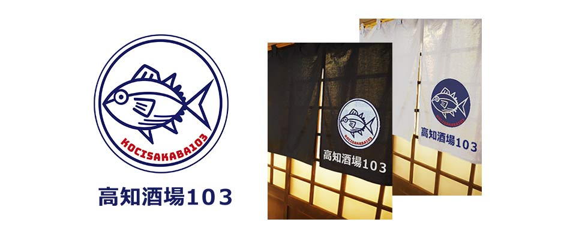

高知酒場１０３
クラウドワークス案件

作品概要
- かつおの藁焼きたたきが売りの土佐料理居酒屋のロゴデザイン
- コンセプトは「かつおの藁焼きたたきと土佐料理」×「ネオ大衆酒場」
- ターゲット層は都心で働くサラリーマン、ウーマン
- 店内は入店しやすく、大衆酒場とは違う清潔感のある雰囲気
- カツオのイラストを入れて欲しい
ポイント
- 大きく勇ましいイメージのカツオを女性にも好感を持っていただけるよう、あえて素朴で愛らしい表情に。
- ネオ大衆酒場のイメージに近付けるようレトロ感を出し、ノスタルジックな店内の雰囲気にもマッチするような配色に。
- 外国人観光客も多い地域だったため、ローマ字表記も追加した。
- 制作時間：2時間
- 使用ソフト：Illustrator/ Photoshop